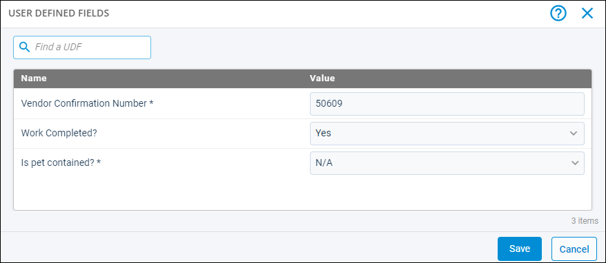

Source: https://rmxhelp.rentmanager.com/Topics/Express/CSH/Issue-UDFs.htm
Issue User Defined Fields (Pop-Up)
User defined fields (UDFs) are custom fields used to track information that Rent Manager does not track by default. UDFs are available for each entity (e.g., tenant, prospect, property, unit, and so on.) throughout Rent Manager. Each UDF has a control type to determine how this data is recorded (e.g., Text, Numeric, File, and so on). When working with issues, you can use this UDFs to record and track important updates regarding the ticket. You can enter values for UDFs on the issue's details page. For example, if the vendor provides you with a confirmation number related to the issue, you can record it in the related UDF field so that it always linked to that issue.
Creating new or modifying existing user defined fields must be done through the User Defined Fields page. Managing UDFs from the User Defined Fields page updates how user defined fields display across all issues.
Related Privileges
| Group | Privilege | Column |
|---|---|---|
| Service Manager | Issues | View, Edit |
For more information, refer to Control User Access.
To view and manage UDFs that can be applied to an issue, use one of the following navigation paths provided in the table below:
| Issue | Location |
|---|---|
|
Issues |
Go to |
|
Memorized Issues |
Go to |
|
Recurring Issues |
Go to |

Column Descriptions
The following columns display on this page.
| Column | Description |
|---|---|
|
Name |
The unique name of this UDF. If the name is followed by an asterisk (*), it is a required field and must have a value entered before saving the page. The name can be edited from the User Defined Fields page and changes how the UDF displays everywhere it is available. |
|
Value |
The information you wish to track. For example, if a vendor provides you with a confirmation number for the work done on an issue, you can enter it in the Value field for the issue. |